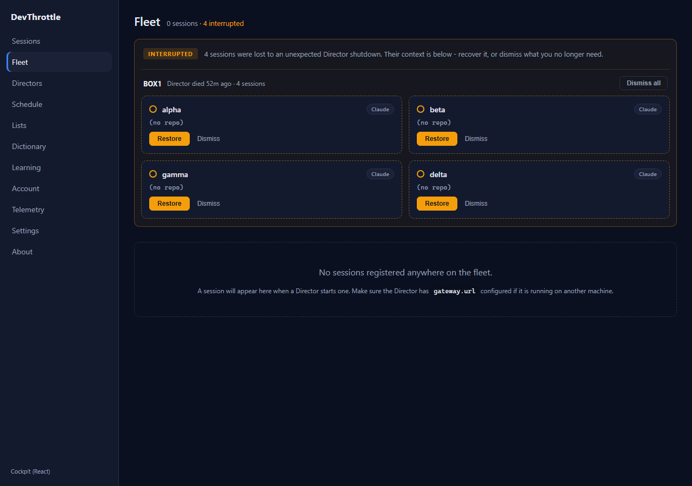
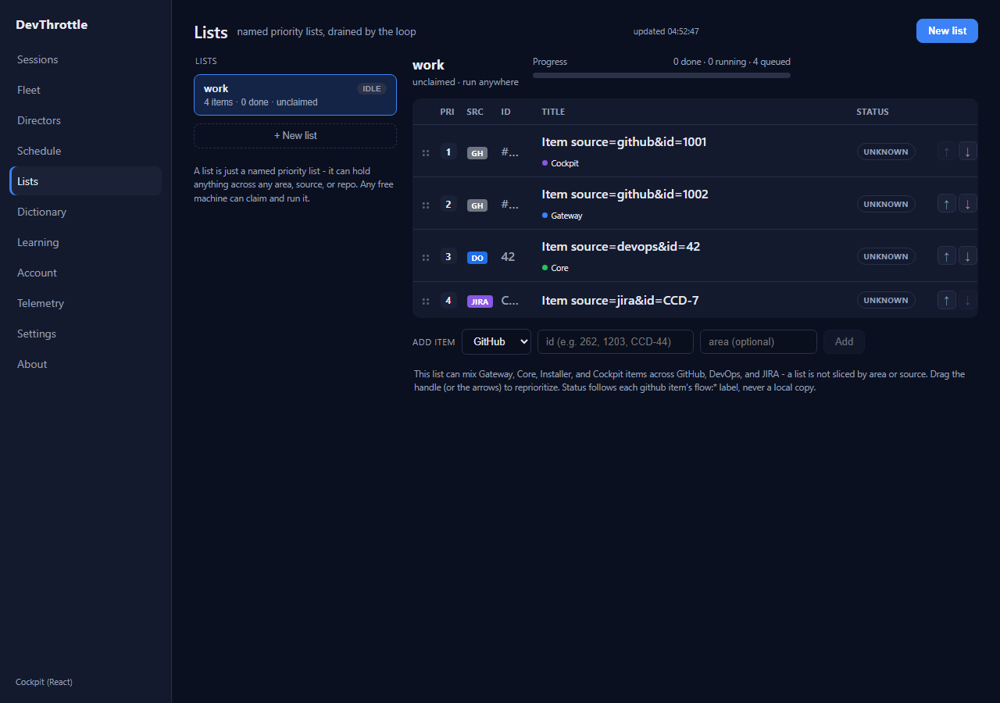
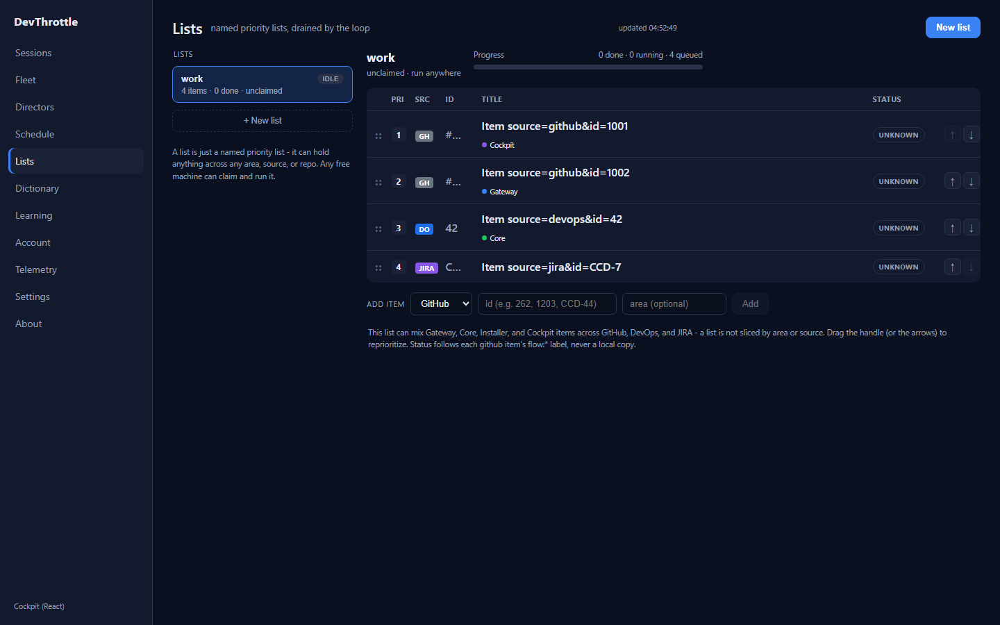

Cockpit QA cleanup: Fleet key warning, Lists table overflow, Transcripts non-array guard.
Epic #967. PR #1051, branch issue-1050-cockpit-qa-cleanup.
Independently verified by the QA Agent in an isolated worktree
(D:\workspaces\devthrottle-wt-1050) on the PR branch head. The Developer report was NOT
trusted; every result below was reproduced from scratch, including a mutation (revert-to-old) check
that proves each fix is load-bearing.
| # | Criterion | Expected | Actual (reproduced) | Verdict |
|---|---|---|---|---|
| a | /fleet logs no React key warning even with interrupted crash-journal cards that have empty/duplicate session ids. |
Zero React duplicate-key warnings. | Rendered 4 interrupted cards in one group with 2 empty and 2 duplicate (dup) session ids. Console duplicate-key warnings = 0; zero console/page errors. Mutation: reverting the key back to key={s.sessionId} made React emit the exact "Encountered two children with the same key" warning (empty and dup) - confirming the ${sessionId}-${index} key is what silences it. |
PASS |
| b | Lists items table has no internal horizontal overflow at 1280/1440px; Title + Status stay visible. | tableOverflow = 0 at both widths; Title and Status headers visible. | At 1280 and 1440: table.scrollWidth - table.clientWidth = 0, last actions column = 108px, Title + Status both fully visible. Mutation: reverting the column to the old 66px reproduced exactly 25px of internal overflow at both widths - matching the reported root cause and the developer's measurements.json. |
PASS |
| c | getRecordings() and siblings return [] for a non-array body without throwing; Transcripts renders empty/error state. |
Non-array body degrades to []; tests fail on old body ?? [], pass on Array.isArray guard. |
vitest: 108 tests pass (11 new across getRecordings/getFleetDirectors/getInterrupted). Mutation: reverting all three clients to the old bare read/`body ?? []` made 4 of the new tests fail (object and string bodies for recordings; object and null bodies for the fleet siblings) - proving the Array.isArray guard is what prevents "x.map is not a function". null ?? [] still returns [] on the old code, as expected. |
PASS |
| d | Full build gate clean. | cockpit build + lint, Gateway build (RunCockpitBuild=true), full solution, all clean. | cockpit npm run build: 108 modules, built OK. npm run lint: exit 0. client-core vitest run: 108 passed. Gateway dotnet build -p:RunCockpitBuild=true: Build succeeded, 0 Warning(s) 0 Error(s), cockpit staged into wwwroot/c. dotnet build cc-director.sln: Build succeeded, 0 Warning(s) 0 Error(s). |
PASS |



Machine-readable measurements from the QA run: qa-results.json.